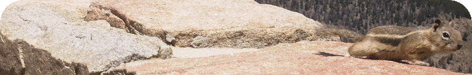

Teaching
Teaching Philosphy
My teaching is strongly influenced by a scaffolded-Socratic model, as well as my work in representation and learning. Teaching is the revision of structured knowledge, not additive accumulation. I also emphasize laboratory-based mentoring in education.
The "Reader's Digest" (one-page) version of my teaching statement can be found here.
Further Reading:
NPR - Why Teachers Need to Know the Wrong Answers
American Educator - Understanding Misconceptions
Like finding a safe mountain pass, the learner's shortest path from A to B may not be a straight line. A teacher's detailed map of surrounding pitfalls is necessary to plotting the best route across difficult terrain.
Courses scheduled for Spring 2023
- Cognitive Neuroscience (PSYC 031), Swarthmore College
- Research Practicum in Cognitive Neuroscience (Analysis of Human Neuroimaging Data; PSYC 110), Swarthmore College
- Thesis in Psychology (PSYC 097), Swarthmore College
- Thesis in Neuroscience (PSYC 099), Swarthmore College
- Honors Thesis in Psychology (PSYC 181), Swarthmore College
Fall 2022 Courses
- Psychology of Language (PSYC 034), Swarthmore College
- Thesis in Cognitive Science (COGS 092), Swarthmore College
- Thesis in Psychology (PSYC 096), Swarthmore College
- Thesis in Neuroscience (PSYC 099), Swarthmore College
- Honors Thesis in Psychology (PSYC 180), Swarthmore College
Other courses taught at Swarthmore
- Introduction to Cognitive Science (COGS 001)
- Research Design & Analysis (PSYC 025)
- Cognitive Neuroscience (PSYC 031)
- Seminar in Cognitive Neuroscience: Language (PSYC 131)
- Independent Research Projects (PSYC 094)
- Thesis in Neuroscience (PSYC 099)
Past courses taught elsewhere
- Introductory Statistics (PSYCH 200), Penn State World Campus
- Research Methods Lab (PSYCH 301W), Penn State University
- Psychology of Language (PSYCH / LING 457), Penn State University
- Language and the Brain (BCS 265), University of Rochester
Learning About Statistics
- Learning Statistics with R by Danielle Navarro
- Statistical Thinking for the 21st Century by Russel Poldrack
Learning To Script in R and Python
- Data wrangling, exploration, and analysis with R by Jenny Bryan
- R for Data Science by Garrett Grolemund & Hadley Wickham
- Dive Into Python by Mark Pilgrim (The website seems to be taken down, but the book is good)
Productivity and Strategic Working
- Study Hacks: Cal Newport's blog on productivity and doing valuable, meaningful work.
- Matt.Might.Net: Matt Might's extensive writing on success in graduate school, academics, productivity, and a TON of computer science resources.